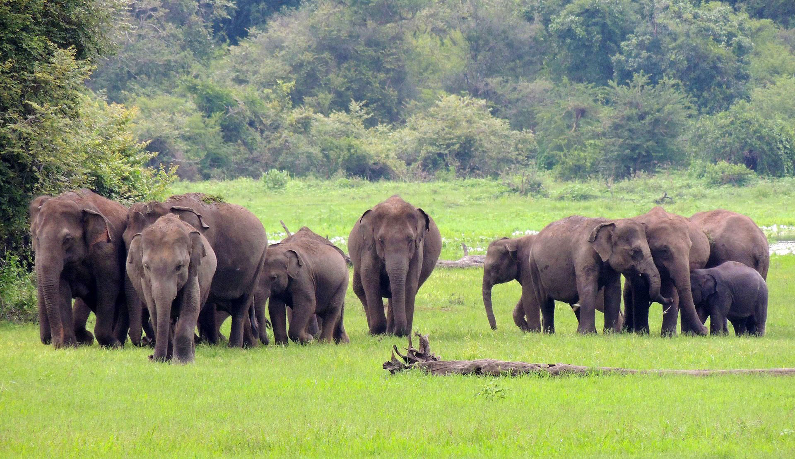
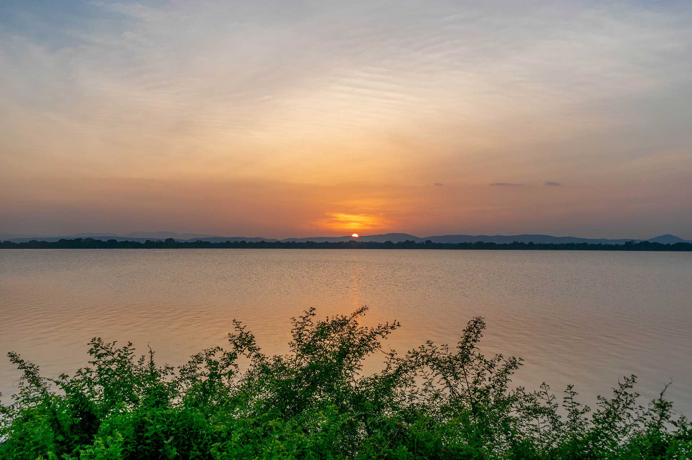

Polonnaruwa Vatadage is a well-preserved Vatadage in the famous Dalada Maluwa quadrangle of the ancient city of ruins, Polonnaruwa. Vatadages are typical Buddhist structures found in Sri Lanka. These are circular, constructed using stone and brick with intricate stone carvings and a wooden roof. They were built to protect stupas. Currently, there are ten Vatadages in Sri Lanka, and the most popular one is Polonnaruwa Vatadage. This structure is built in Buddulakara or bubble-shaped design and is the perfect example of a typical Sri Lankan Vatadage. The upper part of the structure has been destroyed; only the lower part remains. Many theories revolve around the construction of this monument, but most historians agree to the hypothesis that it was built by Parakramabahu I in the 12th century. The Vatadage was initially constructed to protect the tooth relic of Buddha and his ten commandments. Buddhists believe that Buddha’s left canine remained even after his cremation, and the country has preserved this relic as their prized possession. This tooth, which was the reason for the construction of Polonnaruwa Vatadage, is now placed in the Temple of Kandy. The Vatadage protects a small stupa of 8 inches. The structure has two platforms - an upper platform and a lower one. The lower platform is 120 feet in diameter and 4 feet in height, while the top platform is 80 feet in diameter and 5 feet in height. The centre of the top platform has four Buddhist statues in dhyana mudra in sitting position. The four figures are 5 feet tall and face the four cardinal directions. This architecture makes the Vatadage a very typical one, with a charm of its own. The structure and its surroundings emit positivity and are extremely inviting for tourists.
Nissanka Latha Mandapaya is a unique structure located in Sri Lanka. This architectural marvel is one of it's kind for many reasons. Nissanka Latha Mandapaya is a unique structure located in Dalada Maluwa quadrangle of Polonnaruwa district in North Central Province, Sri Lanka. This architectural marvel is one of it's kind for many reasons. King Nissanka Latha built Nissanka Latha Mandapaya in the 20th century. The purpose of this construction was to recite and hear Buddhist scriptures. Mandapa is a word used for sheltered pillars. In the 20th century, mandapas were built inside houses and used for recitals during after death ceremonies, which is how the structure got its name. Nissanka Latha Mandapaya is a raised stone platform, with many small stone pillars and eight big granite ones, a stone fence and a small stupa. The granite pillars are 8.5 feet tall and surprisingly curved at three places. The top of the pillars has a carving of a blooming lotus, while the test of the columns denotes the structure of a stem. The middle of the platform is a small stupa, which is also made of stone. The upper part of the stupa has been ruined but was identified to be made of wood.This structure is unique to Sri Lanka. No other architectural composition has been able to look like the magnificent Nissanka Latha Mandapaya. Unsurprisingly, Sri Lanka considers this site as a treasure and protects it accordingly.


Wasgamuwa is a national park situated in Matale & Polonnaruwa districts, bordering the Mahaweli River. Wasgamuwa is very popular for drastic and tallest wild elephants and birds. The best time to visit is the evening when elephants become more active and keep clam, less noisy since wild elephant may attack your jeep. Our visit to Wasgamuwa NP is superb. There are 3 wildlife bungalows inside the park and we stayed Wavulabe Wildlife Bungalow which is very nice place in the band of Mahaweli River. Bungalow keeper Sarath was very helpful person and his foods are tasty and superb. Our tracker is Dhanushka, he is very experience tracker. He saved us from unexpected elephant attack. But the Park Warden and the management is not that much great since we have to wait more than one hour to find a tracker and clear the entrance
Pimburaththewa Lake is situated in Aralaganwila in the Polonnaruwa district. It is a beautiful lake surrounded by amazing views of the lush greenery found in the Polonnaruwa district. It is situated approximately 10 km away from the Maduru Oya dam. Caution should be taken when bathing in this lake as it is very common for elephants to appear especially in the evening.


Parakrama Samudra is a water reservoir which consists of five different lakes namely Thopa, Dumbutulu, Erabadu, Boo, Katu tanks. It is also known as King Parakrama's Sea and is in Polonnaruwa in Sri Lanka. Topa Wewa is the oldest reservoir here which was built around 386 AD. The middle section has Eramudu Wewa and below you have Dubutula Wewa. The lakes here are separated by a smaller dam to reduce the pressure.Parakrama Samudra (or the Sea of King Parakrama) is a shallow reservoir, consisting of five separate pools (Thopa, Dumbutulu, Erabadu, Boo, Katu tanks) connected by narrow channels in Polonnaruwa, Sri Lanka. It has a storage area of more than 5,000 acres for the irrigation of 18,000 acres. It is one of the most significant ancient Rainwater Reservoir of the island. In the rainy season, the rainwater reservoir is in its full splendour. It is an essential site for the Sri Lankan endemic species. Because of the 2004 Tsunami effects, many aquatic lives suffered damages, including numerous reefs due to which a step taken by the government to protect a variety of species of birds and marine beings. This humanmade lake is not only a big project that provides a method of irrigation but also serves as a home to fish and aquatic vegetation. It is a beautiful site, which gives you a burst of fresh air as you stand by it. The greenery that surrounds it adds to its beauty. You can also visit the nearby museum and hire bicycles for sightseeing.


Danigala Circular Rock is a unique shaped rock situated near Aralaganwila in the Polonnaruwa district. Ariel views of the rock show a unique semi-circular shape of it. There have been news of UFO sightings and alien activities in this area which gives it the name “Alien Mountain”.There is a peculiar form of vegetation surrounding the Danigala Circular Rock which makes it suspicious for alien activity. The rock also has a temple and many caves in the surrounding area. One such cave consists of a large reclining Buddha statue which is similar to the one found at Pidurangala. This Buddha image made of brick and stucco is said to be 38.9 feet in length but has been vandalized by treasure hunters. The rounded track on top of Danigala does not seem to be man-made. Locals believe of alien activity in this area due to the peculiar features of Danigala. Danigala is known in the names “Alien Mountain”, “Kandegama Rock” and “Star Gate of King Ravana”. It is believed to be one of the places where King Ravana landed his special aircraft, “Dandu Monara”.A total of 70 caves have been found in this area. These caves date as early as the 2nd century. The place is often accessed by wild elephants from the surrounding areas. Many inscriptions have been carved on the rock here and one such inscription mentions King Saddatissa and his son. The inscriptions also mention the many donors of the caves.